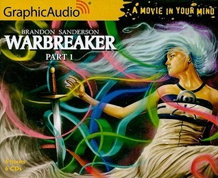

"Warbreaker (Graphic Audio Version)"
- Read on 2011-07-16
- Rating: ️️️️️
- Format: üéß (17 hours 0 minutes)
I've read this book, but wanted to listen to this version of it (by Graphic Audio). They claim it's like "a movie in your mind" as they have different people reading the different parts, with sound effects, and less of the obvious actions explained. It's a fun style for an audio book. I still enjoy the book itself.
- Prior: The Wise Man's Fear
- Next: The Alloy of Law